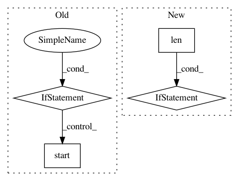

4b83c1070cebd0d996ba2cc69779dcb66d5d0032,autokeras/classifier.py,ClassifierBase,fit,#ClassifierBase#Any#Any#Any#Any#Any#,126
Before Change
pickle.dump(self, open(os.path.join(self.path, "classifier"), "wb"))
pickle_to_file(self, os.path.join(self.path, "classifier"))
if time_limit is None:
while True:
searcher = self.load_searcher()
if searcher.model_count >= constant.MAX_MODEL_NUM:
return
p = multiprocessing.Process(target=run_searcher_once, args=(x_train, y_train, x_test, y_test, self.path))
p.start()
p.join()
start_time = time.time()
while time.time() - start_time <= time_limit:
p = multiprocessing.Process(target=run_searcher_once, args=(x_train, y_train, x_test, y_test, self.path))
p.start()
After Change
start_time = time.time()
while time.time() - start_time <= time_limit:
run_searcher_once(x_train, y_train, x_test, y_test, self.path)
if len(self.load_searcher().history) >= constant.MAX_MODEL_NUM:
break
def predict(self, x_test):
Return predict result for the testing data.
Args:
In pattern: SUPERPATTERN
Frequency: 3
Non-data size: 4
Instances
Project Name: jhfjhfj1/autokeras
Commit Name: 4b83c1070cebd0d996ba2cc69779dcb66d5d0032
Time: 2018-05-29
Author: jhfjhfj1@gmail.com
File Name: autokeras/classifier.py
Class Name: ClassifierBase
Method Name: fit
Project Name: HazyResearch/fonduer
Commit Name: 0de3c091c75e36ffb4c12a2048110df37cafb644
Time: 2018-09-20
Author: lwhsiao@stanford.edu
File Name: src/fonduer/candidates/mentions.py
Class Name: Ngrams
Method Name: apply